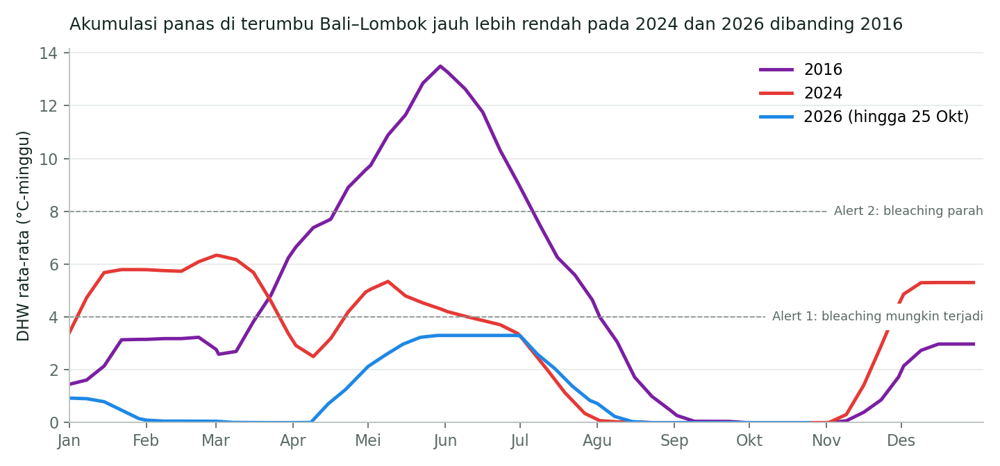
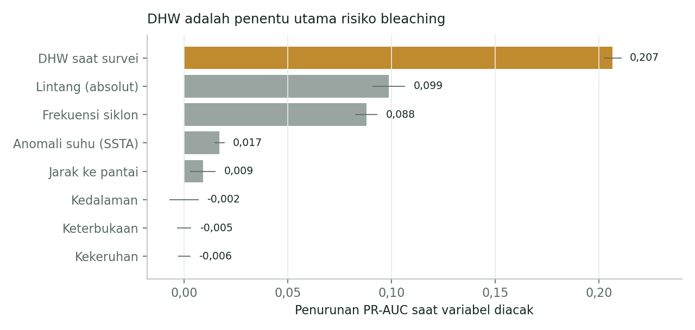

Prediksi Risiko Pemutihan Karang di Bali–Lombok dengan Machine Learning
Latar belakang
Pada pertengahan 2016, laut di sekitar Bali dan Lombok memanas berbulan-bulan lebih lama dari biasanya. Di Gili Layar, Gili Rengit, dan Teluk Medane, penyelam mendapati lebih dari tiga perempat karang berubah pucat seperti tulang. Karang memutih ketika panas yang menumpuk membuatnya melepaskan alga simbion yang memberinya warna dan sebagian besar makanannya. Jika panas tidak segera reda, karang itu akan segera mati.
Gelombang panas laut kini datang makin sering, sementara tenaga dan dana untuk memantau terumbu terbatas. Pertanyaannya, terumbu mana yang paling perlu diawasi lebih dulu ketika laut mulai memanas, dan seberapa besar risikonya pada 2024 dan 2026?
Data yang digunakan
| Data | Format Data | Jenis Data | Sumber |
|---|---|---|---|
| Global Coral Bleaching Database 1980–2020 (34.498 survei dengan persentase pemutihan, 11.055 lokasi) | Tabel (CSV) | Sekunder | BCO-DMO (van Woesik & Kratochwill, 2022) |
| Degree Heating Week (DHW), anomali suhu, dan suhu permukaan laut harian, resolusi 5 km, 2016, 2024, dan 2026 | Raster (grid) | Sekunder | NOAA Coral Reef Watch v3.1, melalui ERDDAP |
Model dilatih dengan seluruh survei global, sedangkan peta risiko difokuskan pada 154 lokasi terumbu yang pernah disurvei di Bali, Lombok, dan Banyuwangi (114,3°–116,8° BT dan 7,9°–9,2° LS). Data NOAA untuk 2026 tersedia hingga 25 Oktober 2026.
Metode
Tidak semua karang yang pucat berarti sedang memutih karena panas. Hampir di setiap survei selalu ada beberapa karang yang terlihat pucat, bisa karena sakit, terluka, atau karena penilaian penyelam yang satu sedikit berbeda dengan yang lain. Karena itu, sebuah lokasi baru dihitung mengalami pemutihan kalau lebih dari 10% karangnya memutih. Pemutihan akibat panas biasanya jauh lebih parah dari angka itu, jadi batas 10% cukup untuk membedakan keduanya.
Data kemudian dipisah berdasarkan tahun. Survei tahun 1985–2012 dipakai untuk melatih model, survei 2013–2015 untuk menentukan batas peringatan, dan survei 2016–2020 untuk menguji hasilnya. Kenapa tidak diacak saja? Saat gelombang panas datang, karang di banyak tempat biasanya memutih bersamaan. Kalau data diacak, survei dari kejadian yang sama bisa masuk ke data latih sekaligus data uji. Model jadi seperti mengerjakan ujian dengan soal yang sudah pernah dilihat, sehingga nilainya terlihat bagus padahal belum tentu.
| Tahap | Keterangan |
|---|---|
| Label | Pemutihan bila persentase karang memutih > 10%; diuji juga dengan ambang 0% dan 20% |
| Variabel penjelas | DHW saat survei, anomali suhu permukaan laut, kedalaman, jarak ke pantai, kekeruhan, keterbukaan, frekuensi siklon, dan lintang |
| Pembagian data | Latih 1985–2012 (24.092 survei), validasi 2013–2015 (4.491), uji 2016–2020 (5.915) |
| Data tidak seimbang | Bobot kelas seimbang; evaluasi memakai PR-AUC, presisi, dan recall, bukan akurasi |
| Model | Aturan peringatan NOAA (DHW ≥ 4 °C-minggu) sebagai pembanding, regresi logistik, Random Forest, dan Gradient Boosting |
| Ambang keputusan | Dipilih pada data validasi dengan skor F2, yang memberi bobot lebih pada recall (Random Forest: 0,28) |
| Kalibrasi DHW | DHW NOAA disetarakan dengan DHW pada data latih melalui regresi linear di 224 pasangan survei Bali–Lombok (r = 0,72) |
| Peta risiko | Model akhir dilatih ulang dengan seluruh data 1985–2020, lalu dijalankan dengan DHW tertinggi tiap lokasi pada 2024 dan 2026 |
Hasil
Tahun 2024 adalah tahun yang berat bagi terumbu karang di Bali dan Lombok. Dari 154 lokasi terumbu yang diamati, 139 di antaranya berisiko tinggi atau sangat tinggi mengalami pemutihan, dan tidak ada satu pun yang masuk kategori rendah. Pada 2026 keadaannya jauh lebih baik. Jumlah terumbu yang berisiko tinggi turun menjadi 47 lokasi, dan 32 lokasi kembali ke kategori rendah.

Perbedaan kedua tahun itu terlihat dari panas yang menumpuk di laut. Panas pada 2024 memang tidak setinggi 2016, tetapi bertahan lama. DHW rata-rata sudah di atas 4 °C-minggu sejak Januari, akibat panas yang terbawa dari akhir 2023, lalu naik lagi pada April–Mei. Pada 2026, panas hanya memuncak sebentar pada Mei dengan DHW rata-rata sekitar 3,3 °C-minggu, sehingga risikonya jauh lebih rendah.
Klik titik terumbu untuk melihat DHW dan peluang pemutihannya. Setelah peta diklik, gulir untuk memperbesar atau memperkecil.
| Kategori risiko | Peluang pemutihan | Lokasi 2024 | Lokasi 2026 |
|---|---|---|---|
| Rendah | < 0,28 | 0 | 32 |
| Sedang | 0,28–0,50 | 15 | 75 |
| Tinggi | 0,50–0,70 | 84 | 38 |
| Sangat tinggi | ≥ 0,70 | 55 | 9 |
| Total | 154 | 154 |
Terumbu mana yang perlu diawasi lebih dulu?
Semua terumbu yang masih berisiko tinggi pada 2026 ternyata juga berisiko tinggi pada 2024. Artinya, ke-47 terumbu ini tetap rawan memutih bahkan di tahun ketika laut tidak terlalu panas. Terumbu seperti inilah yang paling perlu diawasi lebih dulu setiap kali laut mulai memanas.
| Wilayah | Lokasi terumbu | Berisiko tinggi 2024 | Berisiko tinggi 2026 | Contoh terumbu yang perlu didahulukan |
|---|---|---|---|---|
| Gugusan Nusa Penida (Klungkung) | 33 | 32 | 17 | Mangrove, Sauna, Bunyuk, Karang Sari |
| Lombok Utara | 48 | 47 | 10 | Gili Trawangan, Sunset Reef |
| Lombok Timur | 7 | 7 | 7 | Gili Sulat, Gili Lawang |
| Buleleng | 21 | 13 | 5 | Pemuteran |
| Karangasem | 23 | 20 | 4 | – |
| Lombok Barat | 10 | 10 | 2 | Coral Beach |
| Banyuwangi dan Sumbawa | 7 | 6 | 2 | – |
| Badung, Denpasar, dan Sumbawa Barat | 5 | 4 | 0 | – |
| Total | 154 | 139 | 47 |
Berisiko tinggi berarti peluang pemutihan 0,50 atau lebih (kategori tinggi dan sangat tinggi). Sebagian lokasi survei tidak memiliki nama di database, sehingga contoh terumbu hanya diambil dari lokasi yang bernama.
Lombok Timur paling perlu diwaspadai. Ketujuh terumbunya, termasuk Gili Sulat dan Gili Lawang, berisiko tinggi di kedua tahun, dan pada 2016 rata-rata separuh karangnya memutih. Gugusan Nusa Penida menyusul dengan 17 terumbu yang tetap berisiko tinggi, kemudian Lombok Utara dengan 10 terumbu, termasuk Gili Trawangan. Di Bali utara, Pemuteran juga termasuk terumbu yang risikonya tetap tinggi pada 2026.
Seberapa bisa dipercaya perkiraan ini?
Perkiraan di atas dibuat dengan model Random Forest. Dari keempat cara yang dibandingkan, model ini paling jeli menemukan karang yang memutih. Pada survei tahun 2016–2020, model ini berhasil menandai 57% kejadian pemutihan, sementara aturan peringatan NOAA hanya menandai 27%. Konsekuensinya, Random Forest lebih sering memberi peringatan yang ternyata meleset, sehingga presisinya lebih rendah. Untuk pemantauan terumbu, hal ini masih bisa diterima. Mendatangi terumbu yang ternyata baik-baik saja jauh lebih baik daripada tidak sempat memeriksa terumbu yang sudah terlanjur memutih.
| Model | PR-AUC | ROC-AUC | Presisi | Recall | F1 |
|---|---|---|---|---|---|
| Aturan NOAA (DHW ≥ 4) | 0,361 | 0,727 | 0,541 | 0,272 | 0,362 |
| Regresi logistik | 0,309 | 0,707 | 0,334 | 0,424 | 0,374 |
| Random Forest | 0,408 | 0,727 | 0,336 | 0,566 | 0,421 |
| Gradient Boosting | 0,408 | 0,717 | 0,376 | 0,505 | 0,431 |
Model dilatih dan diuji dengan survei dari seluruh dunia, bukan hanya Indonesia. Tabel di atas berisi hasil pengujian dengan 5.915 survei dari berbagai negara pada 2016–2020, dan 13,9% di antaranya mengalami pemutihan lebih dari 10%. Kalau pengujiannya dipersempit hanya untuk 453 survei di Bali dan Lombok, PR-AUC Random Forest naik menjadi 0,558 dan presisinya menjadi 0,619, sedangkan recall-nya turun sedikit menjadi 0,448.
Batas 10% tadi juga dicoba diganti. Model diuji lagi dengan batas 0%, yang berarti setiap survei dengan karang memutih sedikit pun ikut dihitung, lalu dengan batas 20%. Di ketiga batas itu, Random Forest tetap memberi hasil terbaik. Jadi hasilnya tidak hanya bagus karena kebetulan memakai angka 10%.
| Ambang label | Survei memutih pada data uji (%) | PR-AUC aturan NOAA | PR-AUC Random Forest |
|---|---|---|---|
| > 0% | 40,0 | 0,516 | 0,602 |
| > 10% | 13,9 | 0,361 | 0,408 |
| > 20% | 9,4 | 0,353 | 0,401 |

Grafik di atas memperlihatkan faktor apa saja yang paling berpengaruh pada tebakan model. Cara membacanya, nilai satu faktor sengaja diacak, lalu dilihat seberapa banyak tebakan model jadi meleset. Makin panjang batangnya, makin penting faktor tersebut.
DHW jelas paling berpengaruh. DHW adalah ukuran seberapa banyak panas yang menumpuk di laut selama 12 minggu terakhir, dan pengaruhnya dua kali lipat faktor lain. Di urutan berikutnya ada lintang dan seberapa sering suatu wilayah dilewati siklon. Dua faktor ini memberi gambaran tentang kondisi wilayah yang tidak terbaca dari angka panas, misalnya apakah lautnya sering mendapat pendinginan dari badai. Sementara itu, kedalaman, kekeruhan, dan keterbukaan lokasi ternyata hampir tidak berpengaruh.
Sebelum dipakai untuk memperkirakan risiko tahun 2024 dan 2026, model perlu dicoba dulu pada kejadian yang sudah pernah terjadi. Untuk itu, model dilatih ulang hanya dengan data sampai 2012, lalu dipakai untuk menebak apa yang terjadi di Bali dan Lombok pada 2016. Tahun itu ada 31 lokasi yang disurvei, dan 25 di antaranya memang memutih lebih dari 10%. Semua lokasi yang memutih itu berhasil ditandai berisiko oleh model. Hanya saja, ada 6 lokasi lain yang ikut ditandai berisiko padahal karangnya baik-baik saja. Artinya, model ini lebih sering memberi peringatan yang tidak perlu daripada melewatkan terumbu yang benar-benar memutih.
Model tidak langsung menjawab apakah karang memutih atau tidak memutih. Yang diberikan adalah angka peluang antara 0 sampai 1. Makin mendekati 1, makin besar kemungkinan karang di lokasi itu memutih. Supaya angka itu bisa dipakai untuk mengambil keputusan, perlu ada batas yang menentukan kapan sebuah terumbu dianggap berisiko. Batas ini dicari dengan memakai 4.491 survei tahun 2013–2015 yang tidak ikut dipakai untuk melatih model. Pada survei-survei itu, model dicoba dengan 91 batas yang berbeda, mulai dari 0,05 sampai 0,95, lalu hasil tebakannya dicocokkan dengan kondisi karang yang sebenarnya.
| Batas peluang | Survei yang diberi peringatan | Survei memutih yang tertangkap (dari 693) | Recall | Presisi | Skor F2 |
|---|---|---|---|---|---|
| 0,10 | 2.854 | 643 | 0,93 | 0,23 | 0,571 |
| 0,20 | 1.713 | 574 | 0,83 | 0,34 | 0,640 |
| 0,28 | 1.192 | 525 | 0,76 | 0,44 | 0,662 |
| 0,40 | 778 | 462 | 0,67 | 0,59 | 0,651 |
| 0,50 | 583 | 403 | 0,58 | 0,69 | 0,601 |
| 0,60 | 385 | 316 | 0,46 | 0,82 | 0,500 |
Dihitung pada 4.491 survei validasi tahun 2013–2015.
Tabel di atas memperlihatkan beberapa batas yang dicoba. Kalau batasnya terlalu rendah, misalnya 0,10, model memang berhasil menangkap hampir semua karang yang memutih, yaitu 643 dari 693 survei. Masalahnya, model jadi memberi peringatan ke 2.854 survei, padahal sebagian besar karangnya baik-baik saja. Sebaliknya, kalau batasnya dinaikkan menjadi 0,60, peringatan yang diberikan hampir selalu tepat, tetapi lebih dari separuh karang yang memutih malah lolos tanpa terdeteksi.
Untuk memilih batas yang paling pas, dipakai skor F2. Skor ini menilai dua hal sekaligus, yaitu berapa banyak karang memutih yang berhasil ditemukan (recall) dan berapa banyak peringatan yang benar (presisi). Bedanya dengan skor biasa, F2 memberi bobot lebih besar pada recall, karena dalam pemantauan terumbu, melewatkan karang yang sedang memutih jauh lebih merugikan daripada mendatangi lokasi yang ternyata aman. Skor F2 tertinggi didapat pada batas 0,28. Pada batas ini, 525 dari 693 karang yang memutih berhasil tertangkap, atau sekitar tiga dari empat, dan hampir separuh peringatannya tepat.
Angka 0,28 memang terdengar rendah, tetapi itu disengaja. Terumbu dengan peluang di bawah 0,28 masuk kategori rendah dan belum perlu dikhawatirkan. Terumbu dengan peluang di atasnya sebaiknya mulai dipantau, dan semakin tinggi kategorinya, semakin perlu didahulukan.
Kesimpulan
Risiko pemutihan karang di Bali dan Lombok sangat bergantung pada seberapa lama laut memanas. Pada 2024, panas yang bertahan berbulan-bulan membuat hampir semua terumbu, yaitu 139 dari 154 lokasi, berisiko tinggi atau sangat tinggi mengalami pemutihan. Pada 2026 panas lebih cepat reda, sehingga jumlah terumbu yang berisiko tinggi turun menjadi 47 lokasi.
Ke-47 terumbu itu adalah terumbu yang paling perlu diawasi lebih dulu, karena risikonya tetap tinggi bahkan di tahun yang tidak terlalu panas. Sebagian besar berada di Lombok Timur, gugusan Nusa Penida, dan Lombok Utara, termasuk Gili Sulat, Gili Lawang, Gili Trawangan, dan beberapa titik penyelaman di sekitar Nusa Penida. Ketika laut kembali memanas, terumbu-terumbu inilah yang sebaiknya diperiksa pertama kali.
Perkiraan ini cukup bisa dipercaya untuk menentukan prioritas pemantauan. Saat diuji pada kejadian tahun 2016, model berhasil mengenali semua terumbu di Bali–Lombok yang memutih, dan secara umum menemukan kejadian pemutihan dua kali lebih banyak dibanding aturan peringatan NOAA. Meski begitu, hasil ini tetap perlu dibaca sebagai perkiraan. Data suhu laut dari satelit memiliki resolusi 5 km, sehingga terumbu yang letaknya berdekatan mendapat nilai panas yang sama. Data panas yang dipakai untuk melatih model dan untuk membuat prediksi juga berasal dari dua sumber berbeda yang harus disetarakan lebih dulu. Prediksi 2024 dan 2026 juga belum dicocokkan dengan survei lapangan terbaru, jadi kondisi 47 terumbu tadi masih perlu dipastikan dengan penyelaman langsung saat laut kembali memanas.
← View other projects